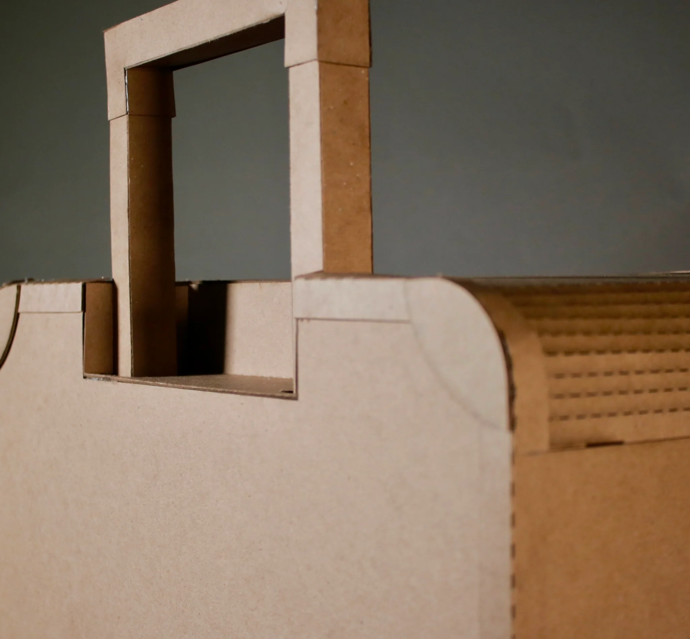
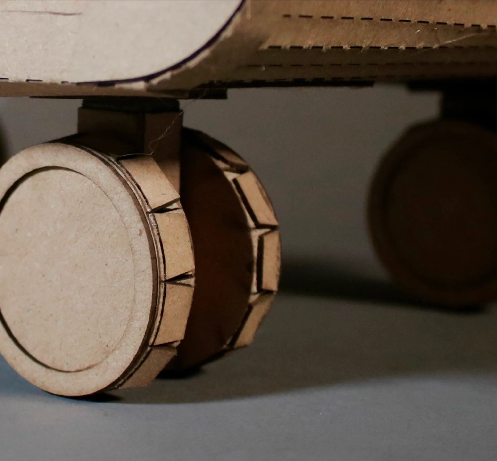
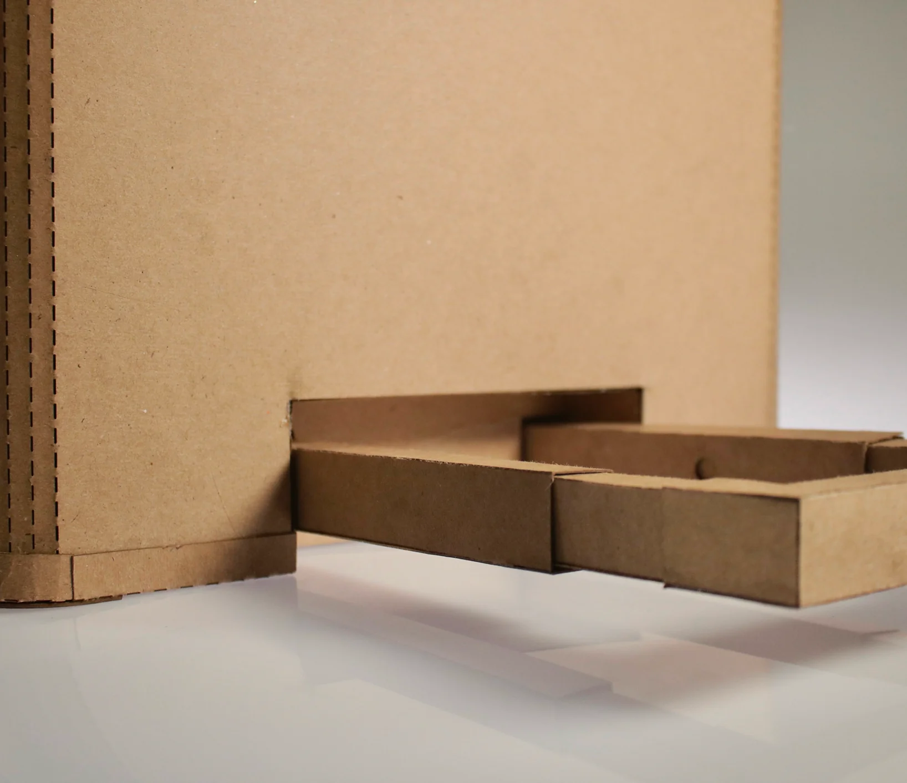
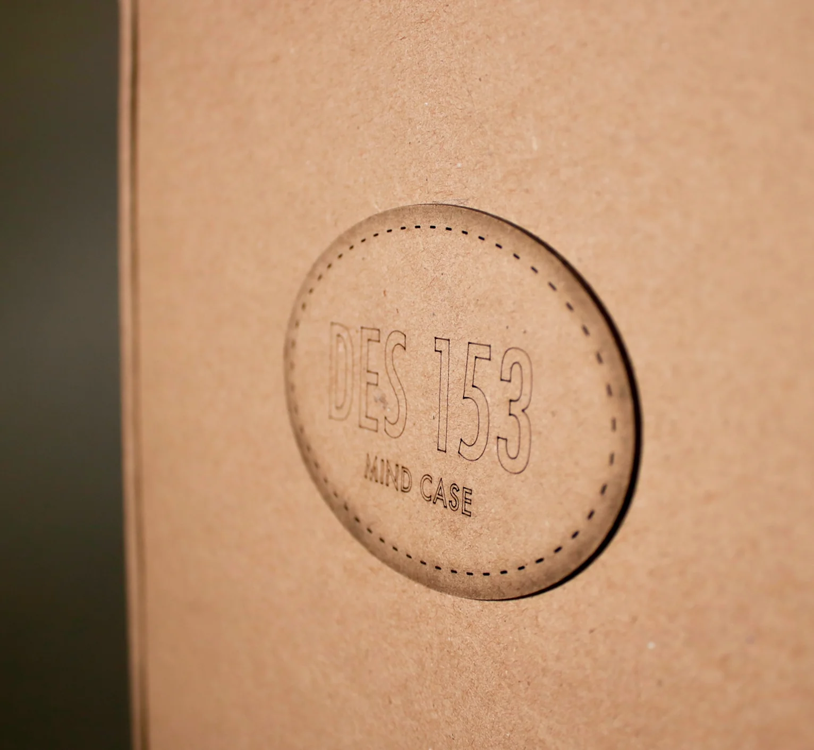
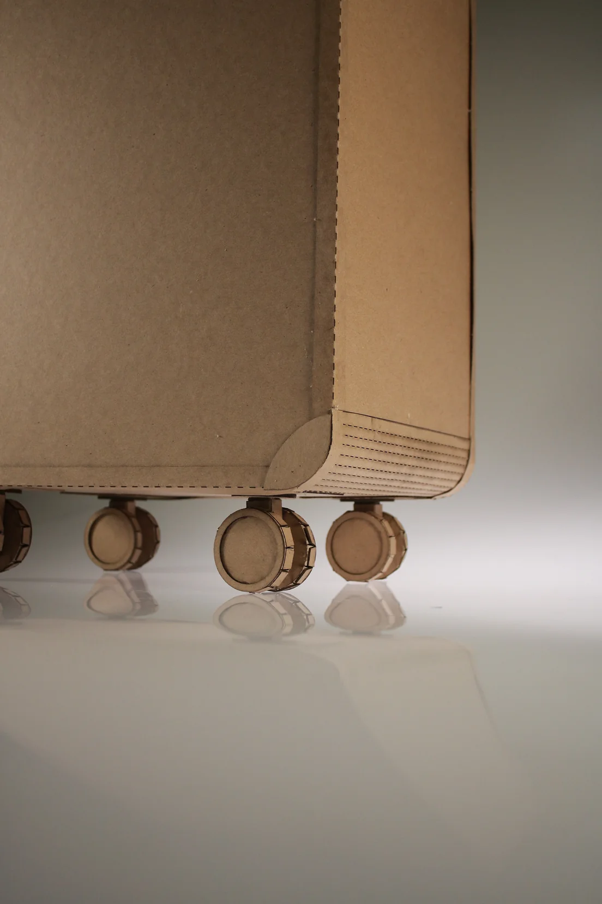
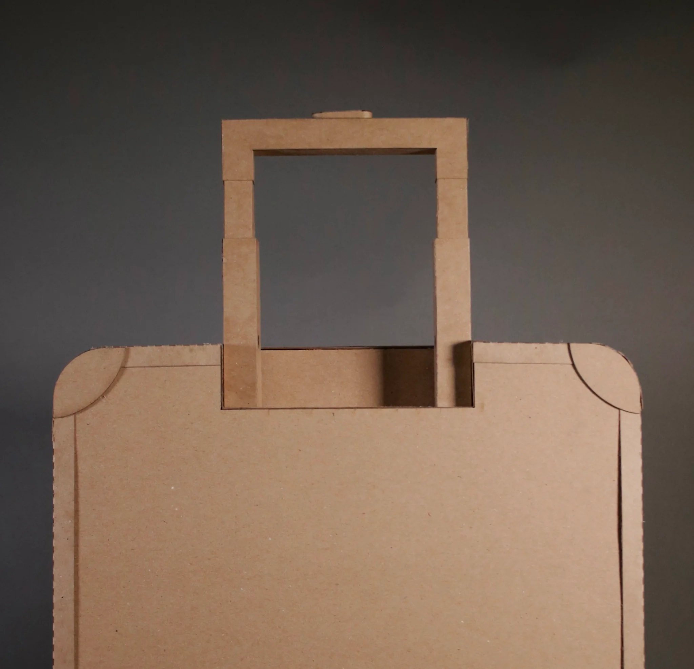
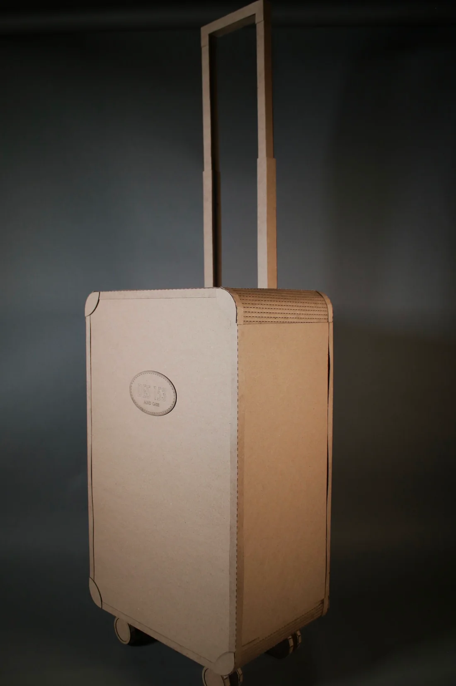

SUITCASE
2026


A STUDY IN STRUCTURE
Created as part of a collaborative fabrication project for the Luggage Tags: Two Cases exhibition, this life-size suitcase replica transforms sheets of chipboard into a familiar travel object.
Inspired by the form of a traditional carry-on, the construction explores how a lightweight material can be cut, folded, and assembled to recreate structural details such as rounded edges, wheels, and a telescoping handle.
The finished suitcase also serves as a display surface for a collection of custom-designed travel stickers.




DETAILS
MATERIALS
Chipboard
Super glue
DIMENSIONS
22 in x 14 in x 9 in

A SURFACE FOR SOMETHING MORE
The suitcase began as an exploration of structure and material, but its surface became a canvas for another layer of design. A collection of custom stickers transforms the plain cardboard exterior into something more personal.